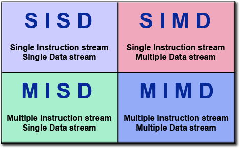
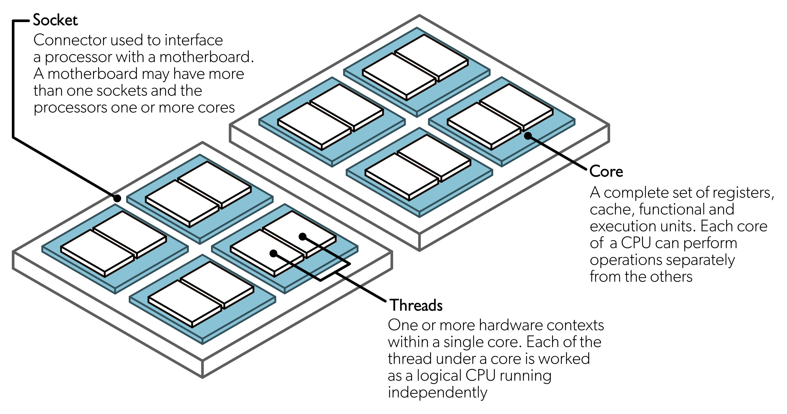
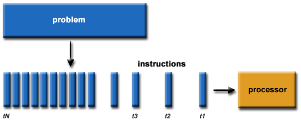
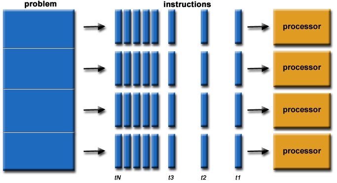
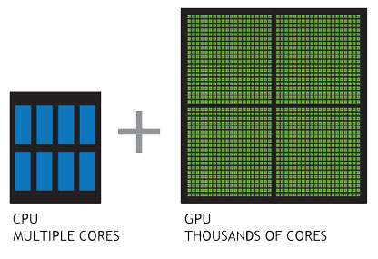
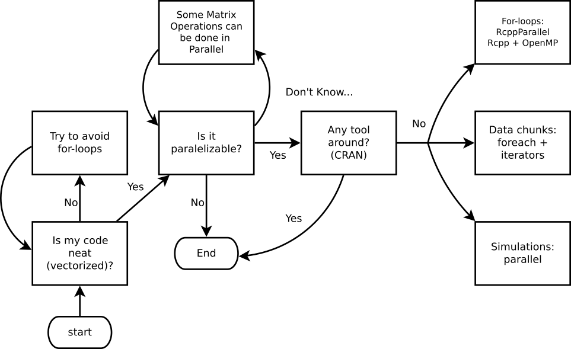

Introducción a la Computación Paralela
Nota de Traducción
Esta versión del capítulo fue traducida de manera automática utilizando IA. El capítulo aún no ha sido revisado por un humano.
Introducción
Aunque la mayoría de la gente ve R como un lenguaje de programación lento, tiene características poderosas que aceleran dramáticamente tu código 1. Aunque R no fue necesariamente construido para la velocidad, hay algunas herramientas y formas en las que podemos acelerar R. Este capítulo introduce lo que entenderemos como computación de alto rendimiento en R.
Computación de Alto Rendimiento: Una visión general
Desde la perspectiva de R, podemos pensar en HPC en términos de dos o tres cosas:2 Big data, computación paralela, y código compilado.
Big Data
Cuando hablamos de big data, nos referimos a casos donde tu computadora lucha para manejar un conjunto de datos. Un ejemplo típico de esto último es cuando el número de observaciones (filas) en tu marco de datos es demasiado para ajustar un modelo de regresión lineal. En lugar de comprar una computadora más grande, hay muchas buenas soluciones para resolver problemas relacionados con la memoria:
Almacenamiento fuera de memoria. La idea es simple, en lugar de usar tu RAM para cargar los datos, usa otros métodos para cargar los datos. Dos alternativas notables son los paquetes R bigmemory e implyr. El paquete
bigmemoryproporciona métodos para usar matrices “respaldadas por archivo”. Por otro lado,implyrimplementa un envoltorio para acceder a Apache Impala, un motor de consultas SQL para un clúster ejecutando Apache Hadoop.Algoritmos eficientes para big data: Para evitar quedarte sin memoria con tu análisis de regresión, los paquetes R biglm y biglasso entregan alternativas altamente eficientes a
glmyglmnet, respectivamente. Ahora, si tus datos caben en tu RAM, pero aún luchas con la manipulación de datos, el paquete data.table es la solución.Almacénalo más eficientemente: Finalmente, cuando se trata de álgebra lineal, el paquete R Matrix brilla con sus clases formales y métodos para manejar Matrices Dispersas, es decir, matrices grandes cuyas entradas son principalmente ceros; por ejemplo, los objetos
dgCMatrix. Además,Matrixviene incluido con R, lo que lo hace aún más atractivo.
Computación paralela
Nos enfocaremos en el Single Instruction stream Multiple Data stream (Flujo de Instrucción Única Flujo de Datos Múltiple).
En términos generales, un programa de computación paralela es uno en el cual usamos dos o más hilos computacionales simultáneamente. Aunque hilo computacional usualmente significa núcleo, hay múltiples niveles en los que un programa de computadora puede ser paralelizado. Para entender esto, primero necesitamos ver qué compone una computadora moderna:

Extensiones SIMD de Flujo [SSE] y Extensiones de Vector Avanzado [AVX]
Serial vs. Paralelo


Fuente: Blaise Barney, Introduction to Parallel Computing, Lawrence Livermore National Laboratory
Computación de alto rendimiento en R
Algo de vocabulario para HPC
En términos crudos
Supercomputadora: Una sola máquina grande con miles de núcleos/GPGPUs.
Computación de Alto Rendimiento (HPC): Múltiples máquinas dentro de una sola red.
Computación de Alto Rendimiento (HTC): Múltiples máquinas a través de múltiples redes.
Puede que no tengas acceso a una supercomputadora, pero ciertamente, los clústeres HPC/HTC son más accesibles hoy en día, p. ej., AWS proporciona un servicio para crear clústeres HPC a bajo costo (supuestamente, ya que nadie entiende cómo funciona la tarificación)
GPU vs. CPU

- ¿Por qué usar OpenMP si GPU está adecuado para operaciones intensivas en cómputo? Bueno, principalmente porque OpenMP es MUY fácil de implementar (más fácil que CUDA, que es la forma más fácil de usar GPU).3
¿Cuándo es una buena idea?

Computación paralela en R
Mientras hay varias alternativas (solo echa un vistazo a la Vista de Tareas de Computación de Alto Rendimiento), nos enfocaremos en los siguientes paquetes R para paralelismo explícito:
parallel: Paquete R que proporciona ‘[s]oporte para computación paralela, incluyendo generación de números aleatorios’.
future: ‘[U]na API Future ligera y unificada para procesamiento secuencial y paralelo de expresiones R via futures.’
Rcpp + OpenMP: Rcpp es un paquete R para integrar R con C++ y OpenMP es una biblioteca para paralelismo de alto nivel para C/C++ y FORTRAN.
Otros pero no usados aquí
Y herramientas para paralelismo implícito (herramientas listas para usar que permiten al programador no preocuparse por la paralelización):
gpuR para manipulación de Matrices usando GPU
tensorflow una interfaz R a TensorFlow.
Una tonelada de otros tipos de recursos, notablemente las herramientas para trabajar con programadores de lotes como Slurm, y HTCondor.
No obstante, esta afirmación se puede decir sobre casi cualquier lenguaje de programación; hay ejemplos notables como el paquete R
data.table(Dowle and Srinivasan 2021) que ha sido demostrado que supera a la mayoría de herramientas de manipulación de datos.↩︎Asegúrate de revisar CRAN Task View on HPC.↩︎
Laboratorios Nacionales Sandia comenzó el proyecto Kokkos, que proporciona una biblioteca C++ que se ajusta a todo para programación paralela. Más información en el sitio wiki de Kokkos.↩︎